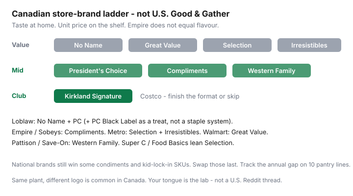

Food & Groceries · Canada
No Name vs President’s Choice vs Compliments: a Canadian store-brand switch playbook
Brand loyalty on oats, tomatoes, and peanut butter is a quiet subscription. Canadian private labels — No Name and President’s Choice (Loblaw), Compliments (Empire / Sobeys / FreshCo / Safeway), Selection and Irresistibles (Metro / Super C / Food Basics), Great Value (Walmart), Western Family (Save-On), Kirkland (Costco) — are packed in plants that often run national brands too. You do not need a U.S. Target thread to switch.
This is a switch playbook: tiers by empire, staples where generics win often enough, when mid-tier PC or Compliments beats a national on sale, a 10-item blind swap, flyer stacking on store brands, and a simple annual tracker. It is not a tasting-show transcript. Your household tongue is the lab. Health Canada’s food-guide budget pages still start with staples and planning, not logos.
Disclosure: There is no natural affiliate on a store-brand switch. If we later mention grocery gift cards or cashback portals, those are offer types and would be disclosed. Nothing here requires a click. Taste at home.
Key takeaways
- Match the value tier to the job: No Name / Great Value / Selection for commodities; PC / Compliments / Western Family when you can taste the gap; Kirkland when the format finishes.
- PC Black Label is a treat aisle, not a staple system.
- Nationals still win some condiments, kid-lock-in SKUs, and genuine preference — keep those, stop paying extra on flour.
- Flyer stacking on store brands is allowed and underused. A No Name tomato on sale beats a national ‘50% off’ that is still higher per millilitre.
- Track 10 pantry lines for 90 days. If you cannot name the dollar gap, you did not switch — you sampled.
Private label tiers explained by empire

| Empire | Value | Mid / house pride |
|---|---|---|
| Loblaw (No Frills, Superstore, Maxi, Loblaws) | No Name | President’s Choice (Black Label = premium treat) |
| Empire (FreshCo, Sobeys, Safeway, IGA) | Compliments value lines / Sensations in some years | Compliments (and Scene+ offers on them) |
| Metro (Food Basics, Super C, Metro) | Selection | Irresistibles |
| Walmart | Great Value | Better Homes & Gardens / other non-grocery lines — stay focused |
| Pattison (Save-On) | Western Family does a lot of both jobs — compare unit price | |
| Costco | Kirkland Signature — club format, not a weekly produce brand | |
Canadian how-tos (including Aubaine’s 2026 private-label showdown style pieces) keep landing here: value brands win commodities; mid-tier wins where texture matters (sauces, frozen meals you actually like, some dairy). That is a pattern, not a lab certificate. Your 10-item swap is the experiment.
Staples where generics win taste tests often enough
Swap these first. If someone notices, you can revert one SKU without torching the system:
- Flour, sugar, salt, baking soda, dried pasta, rice, oats
- Canned tomatoes, beans, corn, coconut milk
- Peanut butter (stirred natural), jam if you are not a texture snob
- Frozen mixed vegetables, frozen berries for smoothies and baking
- Store-brand yogurt large tubs versus named single-serve cups
- Trash bags, foil, parchment — household, still on the grocery bill
Canada’s Food Guide budget shopping notes still push staples, store brands, and flyers. They are not a tasting panel. They are correct about the bill.
When mid-tier (PC/Compliments) beats national brands on sale
Nationals win the endcap. Mid-tier often wins the nutrition table plus the unit price when the national is “on sale” from a fantasy regular. Compare cents per 100 g, not the giant $3.99.
Reach for PC / Compliments / Irresistibles / Western Family when:
- The value brand failed a honest taste test (some ketchups, some coffees, some frozen pizzas).
- The mid-tier is on a genuine flyer cut and the national is not.
- You would otherwise buy a national for “quality” you cannot describe past the logo.
Skip PC Black Label as a weekly habit. That is Loblaws-premium theatre inside a discount strategy.
Blind-swap challenge: 10 pantry items
- Pick 10 SKUs you buy every month. Photograph the national unit price this week.
- Buy the store-brand equivalent at your discounter. Same week, two bowls, no labels at the table.
- Keep, revert, or “mid-tier instead.” Write it down. Feelings fade; the list does not.
- Do not swap kid-lock-in cereal in week one. That is how the experiment dies in a tantrum. See the staged 15-item method in the companion guide.
- At day 30, total the unit-price gap on kept swaps × typical monthly volume × 12. That is the annual number.
Worked example (labelled): $0.40/100 g gap on oats, $0.25 on tomatoes, $0.15 on beans, $1.20 on coffee you actually switched — a two-person house can land $150–$400/year without eating “worse.” If you revert eight items, you learned preferences. That is still a win. You just do not get to claim $400.
Flyer stacking on store brands
Store brands go on flyer. Load PC Optimum or Scene+ or Moi offers on the house brand. Price-match a national at No Frills, then still buy No Name oats that were cheaper unmatched. The Flipp system is not national-brand-only.
Watch member-only pricing: some “sale” PC prices will not match at a competitor. Won’t Be Beat and FreshCo’s 1¢ beat exclude many loyalty prices. Read the exclusion, then buy the cheaper unmatched house brand anyway.
Tracking annual savings from switches
A notes app table is enough: SKU, old unit price, new unit price, packs per year, keep/revert. Review at 90 days with the same honesty as a Costco audit. Reinvest the gap into better proteins or produce if you want the Food Guide version of this — that is the 15-item companion’s last step, not a moral requirement.
Brand loyalty is allowed on the three things you genuinely prefer. It is expensive as a personality for the other forty.
Sources & date stamps
- Health Canada, Canada’s Food Guide: meal planning and grocery shopping on a budget (store brands, staples, flyers).
- Aubaine, No Name vs President’s Choice vs Compliments-style 2026 private-label comparison (Canadian ladder, not U.S. framing).
- Retailer brand pages (No Name, PC, Compliments, Selection, Great Value, Western Family, Kirkland) reviewed at a high level Sep 2026.
- BudgetSmart / similar Canadian grocery-savings roundups on private-label gaps (directional).
Frequently asked questions
Is No Name the same as President’s Choice?
No. Both are Loblaw private labels. No Name is the value line; PC is the mid-tier (Black Label is a premium treat). Taste and unit price both matter. Some plants pack more than one logo — that does not make the recipes identical.
Is Compliments just Sobeys’ No Name?
Compliments is Empire’s house brand family at Sobeys, FreshCo, Safeway, and related banners. Treat it as the thing you compare to No Name and PC on unit price and taste, not as a clone. Scene+ offers sometimes sit on Compliments SKUs.
Should I switch everything at once?
No. Blind-swap 10 pantry staples, keep what passes, revert what fails, and leave kid-lock-in SKUs for later. The staged 15-item guide is the method if all-at-once attempts have already failed in your kitchen.
Are store brands always cheaper?
Usually on commodities, not always versus a genuine national loss-leader. Always read cents per 100 g. A ‘50% off’ national can still lose to a quiet No Name regular.
What about Kirkland versus No Name?
Kirkland is a club format. It wins when two people finish the oil, coffee, or frozen fruit. It loses when the pack is compost. Compare unit price, then freezer space — see the couples Costco framework.